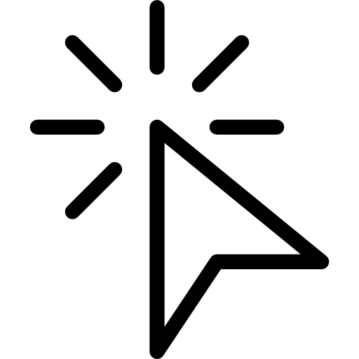
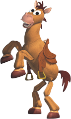
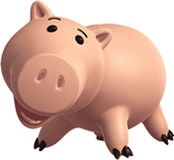

우디(Woody)
우디 프라이드, 간단히 우디는 픽사의 《토이 스토리 시리즈》에 등장하는 등장인물이자 주인공이다. 카우보이 인형으로 영화에서 장난감들의 우두머리를 맡고있다. 디즈니의 애니메이터였던 톤 타인의 얼굴을 본따 만들어졌다.



제시(Jessie)
버즈 라이트이어의 연인. 2편에서 첫 등장한 카우걸 장난감. 우디가 주인공으로 나왔던 인형극 시리즈 Woody's Round up에 나왔다. 틈이 나면 요들송이나 카우걸 특유의 "이~하~!!!" 같은 구령을 외친다.

햄(ham)
장난감이 아닌 돼지 저금통이지만 앤디가 장난감으로 잘 갖고 논다. 주로 놀이에서는 금고 아니면 사악한 꿀꿀이 박사(Evil Dr. Pork Chop)역할을 맡는다. 바깥이 내다보이는 창가에 주로 있기 때문에 바깥이 어찌 돌아가는지에 대해 해박하다.